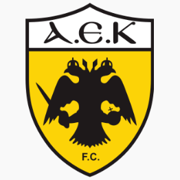
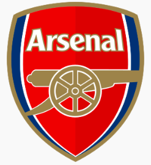
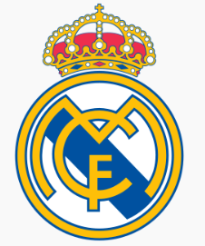

ΟΜΑΔΑ
|
ΤΙΤΛΟΙ
|
|
AEK F.C.

|
- 13 Πρωταθλήματα Ελλάδας : 1938–39, 1939–40, 1962–63, 1967–68, 1970–71, 1977–78, 1978–79, 1988–89, 1991–92, 1992–93, 1993–94, 2017–18, 2022–23
- 16 Κύπελλα Ελλάδας: 1931–32, 1938–39, 1948–49, 1949–50, 1955–56, 1963–64, 1965–66, 1977–78, 1982–83, 1995–96, 1996–97, 1999–00, 2001–02, 2010–11, 2015–16, 2022–23
- 1 Λιγκ Καπ: 1990
- 2 Σούπερ Καπ: 1989, 1996
- 3 Ντάμπλ : 1939,1978,2023
- 1 Πρωτάθλημα Β΄ Εθνικής κατηγορίας: 2015
- 1 Πρωτάθλημα Γ΄ Εθνικής κατηγορίας: 2014
|
|
Arsenal

|
- Α' Αγγλίας / Πρέμιερ Λιγκ (13): 1931, 1933, 1934, 1935, 1938, 1948, 1953, 1971, 1989, 1991/ 1998, 2002, 2004.
- Κύπελλο Αγγλίας / FA Cup (14): 1930, 1936, 1950, 1971, 1979, 1993, 1998, 2002, 2003, 2005, 2014, 2015, 2017, 2020
- Λιγκ Καπ Αγγλίας / League Cup (2): 1987, 1993
- Κομιούνιτι Σιλντ / FA Community Shield (17):
1930, 1931, 1933, 1934, 1938, 1948, 1953, 1991 (μισό), 1998, 1999, 2002, 2004, 2014, 2015, 2017, 2020, 2023
- Κύπελλο Κυπελλούχων Ευρώπης (1):
1994
|
|
Real Madrid CF

|
- Πρωτάθλημα Ισπανίας (35): 1931–32, 1932–33, 1953–54, 1954–55, 1956–57, 1957–58, 1960–61, 1961–62, 1962–63, 1963–64, 1964–65, 1966–67, 1967–68, 1968–69, 1971–72, 1974–75, 1975–76, 1977–78, 1978–79, 1979–80, 1985–86, 1986–87, 1987–88, 1988–89, 1989–90, 1994–95, 1996–97, 2000–01, 2002–03, 2006–07, 2007–08, 2011–12, 2016-17, 2019-20, 2021-2022
- Κύπελλο Ισπανίας (20): 1905, 1906, 1907, 1908, 1917, 1934, 1936, 1946, 1947, 1961–62, 1969–70, 1973–74, 1974–75, 1979–80, 1981–82, 1988–89, 1992–93, 2010–11, 2013–14, 2022-23
- Σούπερ Καπ Ισπανίας (13): 1988, 1989, 1990, 1993, 1997, 2001, 2003, 2008, 2012, 2017, 2019, 2021, 2023
- Κύπελλο Πρωταθλητριών / ΟΥΕΦΑ Τσάμπιονς Λιγκ (14): 1955–56, 1956–57, 1957–58, 1958–59, 1959–60, 1965–66, 1997–98, 1999–2000, 2001–02, 2013–14, 2015–16, 2016–17, 2017-18 , 2021-22
- Κύπελλο ΟΥΕΦΑ (2): 1984–85, 1985–86
- ΟΥΕΦΑ Σούπερ Καπ (5): 2002, 2014, 2016, 2017, 2022
- Διηπειρωτικό Κύπελλο (3): 1960, 1998, 2002
- Παγκόσμιο Κύπελλο Συλλόγων ΦΙΦΑ (5): 2014, 2016, 2017, 2018, 2022
|
|
FC Internazionale Milano
|
- Σέριε Α (19): 1909–10, 1919–20, 1929–30, 1937–38, 1939–40, 1952–53, 1953–54, 1962–63, 1964–65, 1965–66
1970–71, 1979–80, 1988–89, 2005–06, 2006–07, 2007–08, 2008–09, 2009–10, 2020–21
- Κύπελλο Ιταλίας (9): 1938–39, 1977–78, 1981–82, 2004–05, 2005–06, 2009–10, 2010–11, 2021–22, 2022–23
- Σούπερ Καπ Ιταλίας (8): 1989, 2005, 2006, 2008, 2010, 2021, 2022, 2023
- Κύπελλο Πρωταθλητριών / ΟΥΕΦΑ Τσάμπιονς Λιγκ (3): 1963–64, 1964–65, 2009–10
- Κύπελλο ΟΥΕΦΑ / ΟΥΕΦΑ Γιουρόπα Λιγκ (3): 1990–91, 1993–94, 1997–98
- Διηπειρωτικό Κύπελλο (2): 1964, 1965
- Παγκόσμιο Κύπελλο Συλλόγων (1): 2010
|